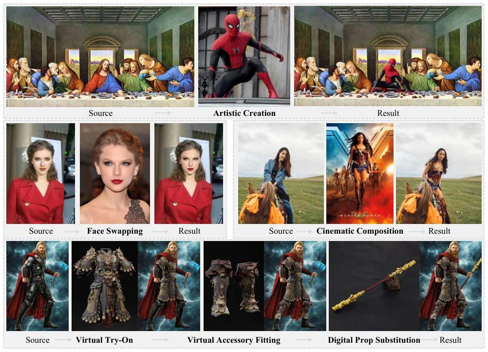
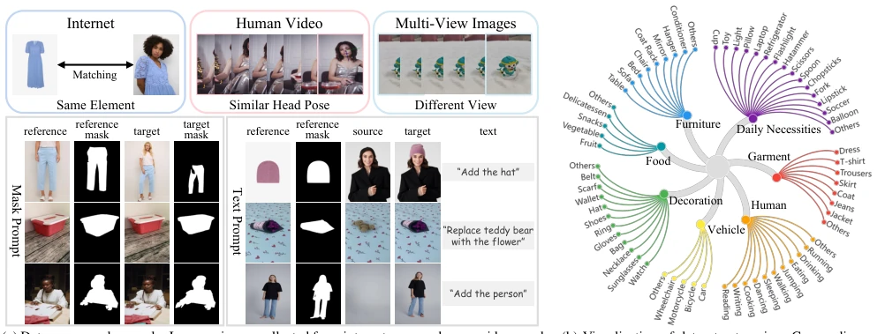
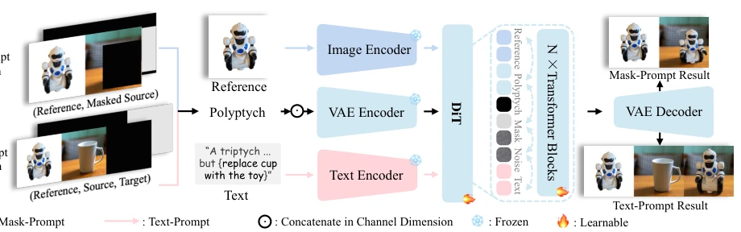
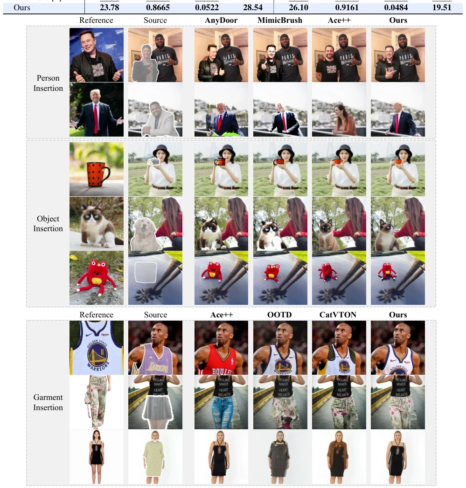
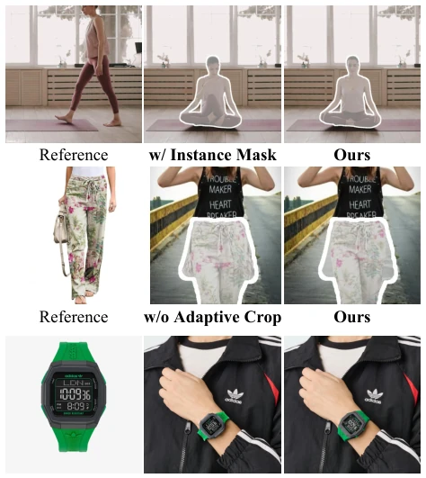

This paper attempts to use DiT to address the "unification" problem of image insertion, which sounds appealing, given that models are currently racing with Transformers. The authors developed an AnyInsertion dataset, claiming 120K pairs, covering people, objects, and clothes, which is much superior to those focusing solely on specific tasks [3][6]. However, is the so-called "unification" merely stacking different tasks into a single model? The concept of In-Context Editing has been heavily hyped; here Diptych/Triptych are used to forcibly insert reference images into the context, counting as a clever trick, but is it truly more efficient than external networks like ControlNet? The experimental results indeed topped the leaderboard, with PSNR and FID looking favorable, but what about inference cost? After all, DiT is heavier than UNet. Overall, it is a decent engineering integration, but the "generalization" label is worn a bit too large, after all, it still relies on training with specific datasets, still a distance away from true zero-shot.
Current image insertion tasks face three major pain points. First, task specificity is too strong; models like AnyDoor [3] or MimicBrush [2] often target only specific objects (e.g., humans or objects), lacking universality. Second, control modes are rigid; either relying solely on Mask [2, 3, 6] or Text [11], users cannot switch flexibly. Finally, visual consistency is difficult to guarantee; inserted elements easily conflict with background styles or lose detail features of the reference image [11, 25]. Existing reference generation methods such as IP-Adapter [48] or DreamBooth [34] can preserve the subject, but lack controllable insertion capability for target scenes. Therefore, the authors propose a framework that can simultaneously support Mask and Text guidance, and maintain identity features and scene harmony and unity.

Figure 1. Applications of Insert Anything. Our unified image insertion framework supports diverse practical scenarios, including artistic creation, realistic face swapping, cinematic scene composition, virtual garment try-on, accessory customization, and digital prop replace- ment, demonstrating its versatility and effectiveness in various image editing tasks.

Figure 2. Overview of AnyInsertion dataset, highlighting its source and example (a) and diversity (b).
方法Method
整体框架基于 DiT 架构（FLUX.1 Fill 改进），核心是 In-Context Editing。Pipeline 分为数据准备、编码与注意力融合、生成三个阶段。 1. 数据构建：AnyInsertion 数据集包含 159K 样本，分为 Mask-prompt 和 Text-prompt 两类，覆盖人、物、服装等。 2. Polyptych 输入：针对 Mask 引导设计 Diptych（参考图 + 掩码源图），针对 Text 引导设计 Triptych（参考图 + 源图 + 生成区），将参考图作为上下文直接拼接，而非单独编码。 3. 多模态注意力：利用 DiT 的 multimodal attention，图像分支处理拼接后的图像块和噪声，文本分支处理语义提示。通过 Q, K, V 的拼接实现视觉与文本的联合注意力 [31]。 4. 语义引导：使用 SigLIP 图像编码器提取参考图语义，辅助保留高频细节。 5. 训练：基于 Flow Matching 优化，冻结 VAE 编码器以保留细节，LoRA 微调 DiT 层。
The overall framework is based on the DiT architecture (FLUX.1 Fill improvement), with the core being In-Context Editing. The pipeline is divided into three stages: data preparation, encoding and attention fusion, and generation. 1. Data Construction: The AnyInsertion dataset contains 159K samples, divided into Mask-prompt and Text-prompt categories, covering people, objects, clothing, etc. 2. Polyptych Input: Diptych (Reference Image + Mask Source Image) is designed for Mask guidance, Triptych (Reference Image + Source Image + Generation Area) is designed for Text guidance, concatenating the reference image directly as context rather than encoding it separately. 3. Multimodal Attention: Utilizing DiT's multimodal attention, the image branch processes concatenated image patches and noise, the text branch processes semantic prompts. Visual and textual joint attention is achieved through concatenation of Q, K, V [31]. 4. Semantic Guidance: Using SigLIP image encoder to extract reference image semantics, assisting in preserving high-frequency details. 5. Training: Optimized based on Flow Matching, freezing VAE encoder to preserve details, LoRA fine-tuning DiT layers.

Figure 3. Overview of the Insert Anything model framework. Given different types of prompts, our unified framework processes polyptych inputs (concatenation of reference, source, and masks) through a frozen VAE encoder to preserve high-frequency details, and extracts semantic guidance from image and text encoders. These embeddings are combined and fed into learnable DiT transformer blocks for in-context learning, enabling precise and flexible image insertion guided by either mask- or text-prompt.
Evaluated on three benchmarks: AnyInsertion, DreamBooth, and VTON-HD. Comparison baselines include AnyDoor [3], MimicBrush [2], ACE++ [25], CatVTON [6], etc. Metrics cover PSNR, SSIM, LPIPS, FID. In terms of results, in object insertion tasks, SSIM under Mask guidance improved to 0.8791, significantly better than AnyDoor's 0.7648 [Table 2]. Under Text guidance, LPIPS dropped to 0.2011, better than AnyEdit [49] [Table 3]. Clothing insertion achieved FID of 19.51 on VTON-HD, better than CatVTON's 24.80 [Table 4]. Portrait insertion also achieved SOTA [Table 5]. Ablation studies show that removing In-Context editing or semantic guidance leads to detail loss [Fig 6, Table 6]. Proving that multimodal context and specific dataset training are crucial for performance.

Figure 4. Qualitative comparison of mask-prompt image insertion results. Our method consistently preserves identity and maintains visual coherence across diverse insertion tasks (person, object, and garment) compared to existing methods (AnyDoor [3], MimicBrush [2], Ace++ [25], OOTD [45], CatVTON [6]).

Figure 8. Ablation study on adaptive cropping and hybrid masking strategies. Removing adaptive cropping reduces detail preservation for small objects, while using only box or instance masks compromises either pose adaptability or mask-guided pre- cision. Our combined strategy achieves balanced and high-quality insertion results.